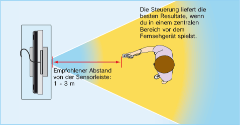

2 |
Zum sicheren Gebrauch |
 |
Hinweis: Der Begriff „Wii-Fernbedienung“ in dieser Anleitung bezieht sich stets sowohl auf die Wii-Fernbedienung als auch auf die Wii-Fernbedienung Plus, sofern nicht anders angegeben.
  Weitere Informationen
Sorge für ausreichend Platz zum Spielen! Während des Spielens mit der Wii-Fernbedienung wirst du möglicherweise Platz zum Bewegen benötigen. Stelle sicher, dass sich in deinem Bewegungsumfeld weder andere Personen noch Gegenstände oder Möbel befinden, um ein Aneinanderstoßen zu vermeiden. Beachte bitte auch den empfohlenen Mindestabstand von einem Meter zum Fernseher.


Diese Informationen kannst du auch unter
Vielen ist der Unterschied zwischen dem 50Hz- und dem 60Hz-Modus
nicht bekannt. Da die meisten neueren Fernsehgeräte den 60Hz-Modus unterstützen, lohnt es sich herauszufinden, ob dein Fernseher kompatibel ist. Vereinfacht gesagt bezieht sich der Begriff Hz (Hertz) auf die Anzahl der Bilder, die pro Sekunde auf dem Bildschirm dargestellt werden. 50Hz stellt 25 Bilder pro Sekunde dar, wohingegen 60Hz annähernd 30 Bilder pro Sekunde darstellt. Dies klingt nicht nach einem gravierenden Unterschied, allerdings ist die Qualitätsverbesserung auf dem Bildschirm eindeutig zu sehen. Die 60Hz (480i)-Darstellung bietet Spielern eine qualitativ hochwertigere Bilddarstellung. Besondere Merkmale sind die sanftere Bildwiedergabe mit reduziertem Flimmern und eine optimale Spielgeschwindigkeit, die zu einer großartigen Spielerfahrung beitragen.
Standardmäßig ist der 50Hz (576i)-Modus ausgewählt. Um den 60Hz (480i)-Modus zu aktivieren, öffne in den Wii-Systemeinstellungen die Option BILDSCHIRM und wähle ihn unter dem Menüpunkt FERNSEHER aus. Manche, in erster Linie ältere, Fernsehgeräte können jedoch keine Spiele im 60Hz (480i)-Modus darstellen. Daher kann es bei einem kleinen Prozentsatz der Spieler zu Schwierigkeiten bei der Darstellung dieses Spiels auf ihren Fernsehgeräten kommen. Um herauszufinden, ob dein Fernsehgerät den 60Hz (480i)-Modus darstellen kann, schlage bitte in der zugehörigen Bedienungsanleitung nach oder wende dich an den zuständigen Hersteller.
Sollte nach dem Wechsel zum 60Hz (480i)-Modus der Bildschirm schwarz bleiben oder ein verzerrtes Bild darstellen, ist es wahrscheinlich, dass dein Fernseher den 60Hz (480i)-Modus nicht unterstützt. Wenn du den RESET-Knopf der Wii-Konsole betätigst, während du unten auf dem Steuerkreuz gedrückt hältst, startet das
Wii-Bedienungsanleitung – Kanäle und Einstellungen. Wenn du zum Anschluss ein Wii-RGB-Kabel
Die EDTV/HDTV (480p)-Darstellung erfolgt progressiv und bietet Spielern die qualitativ hochwertigste Bilddarstellung. Ein besonderes Merkmal ist die gestochen scharfe Bildwiedergabe in optimaler Geschwindigkeit und mit stark reduziertem Flimmern, die zu einer großartigen Spielerfahrung beiträgt. Wir von Nintendo® möchten, dass die Spieler unsere Software unter den bestmöglichen Bedingungen erleben.
Abhängig von der Kombination des verwendeten Kabels und des Fernsehgerätes kann es jedoch sein, dass dieser Modus nicht dargestellt werden kann. Schlage bitte in der zugehörigen Bedienungsanleitung nach oder wende dich an den Hersteller, um zu erfahren, ob dein Fernsehgerät über die erforderliche Progressive Scan-Technik verfügt. Stelle außerdem sicher, das Wii-Komponenten-Video-Kabel (RVL-011) (separat erhältlich) zu verwenden und Progressive Scan am Fernsehgerät zu aktivieren, wenn du diesen Modus auswählst.
Standardmäßig ist der 50Hz (576i)-Modus ausgewählt. Um den EDTV/HDTV (480p)-Modus zu aktivieren, öffne in den Wii-Systemeinstellungen die Option BILDSCHIRM und wähle ihn unter dem Menüpunkt FERNSEHER aus. Weitere Informationen zur Einstellung des Darstellungsmodus erhältst du in der Wii-Bedienungsanleitung – Kanäle und Einstellungen.
|
 auf der Wii-Fernbedienung loslassen. Lasse aber auf keinen Fall die Wii-Fernbedienung selbst los! Solltest du beim Spielen feuchte Hände bekommen, unterbrich das Spielen unbedingt und trockne deine Hände und die Wii-Fernbedienung ab. Übermäßige Bewegungen und ein Loslassen der Wii-Fernbedienung könnten die Handgelenksschlaufe beschädigen. Sollte dir die Wii-Fernbedienung entgleiten, könnte dies zu Verletzungen von in der Nähe stehenden Personen oder zu Schäden an nahegelegenen Objekten führen.
auf der Wii-Fernbedienung loslassen. Lasse aber auf keinen Fall die Wii-Fernbedienung selbst los! Solltest du beim Spielen feuchte Hände bekommen, unterbrich das Spielen unbedingt und trockne deine Hände und die Wii-Fernbedienung ab. Übermäßige Bewegungen und ein Loslassen der Wii-Fernbedienung könnten die Handgelenksschlaufe beschädigen. Sollte dir die Wii-Fernbedienung entgleiten, könnte dies zu Verletzungen von in der Nähe stehenden Personen oder zu Schäden an nahegelegenen Objekten führen.  |
 |
 |